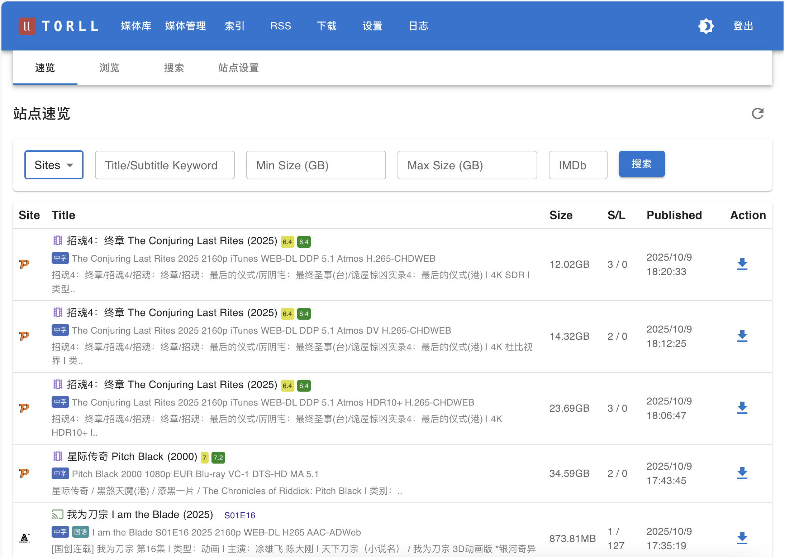
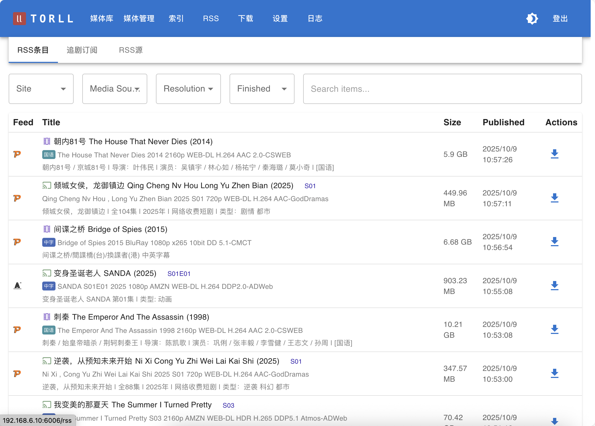
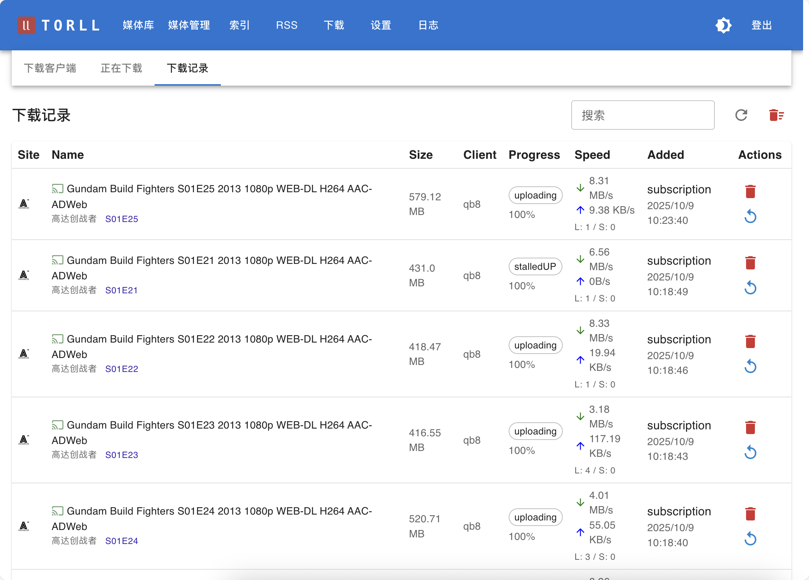

欢迎使用 TORLL2
TORLL2 是一个为 PT 爱好者设计的全自动媒体管理系统。
写在前面
- 项目是为pt圈的朋友们便利应用所写，源码随docker释出
- 不欢迎商业应用
- 安全方面，在公网使用请自己多加小心
功能一览



最近更新
- 2025-11-20: mteam支持；cross-seeder优化；
- 2025-11-15： 并行搜索；Jackett Plugin; nexusphp api 准备；
- 2025-11-9: CookieCloud 插件；简单的辅种插件; QbUtil 插件 等
- 2025-11-2: 安全性审查加固，所有端点作认证；远程机器删除硬链文件；媒体标记(正在看，不想看，已看完...) ；根据标记清理空间；一些默认值，方便 Docker 使用者；
- 2025-10-28: 下载模块改为单例后台排队，解决卡死以及竞态等问题；数据库少量修改，更新需要删除 mysql_data volume 或者手工进后台
alembic upgrade head； - 2025-10-26: 搜索功能：支持 Prowlarr；刮削：local, agent后台刷新机制大量修正；
- 2025-10-08: 远程 rcp_agent 实现远程下载器中的种子改名硬链、修改、重建
- 2025-09-19: 支持
arm64和amd64架构的 buildx 构建。 - 更早: 项目基本成型。